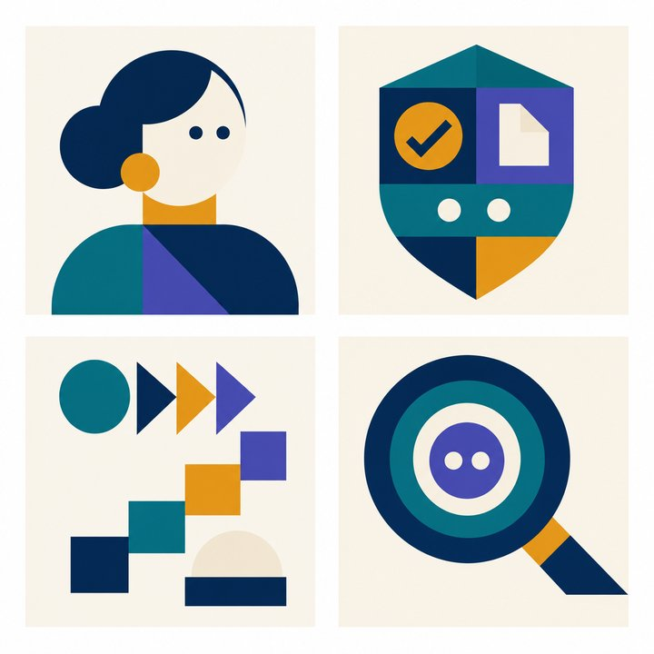
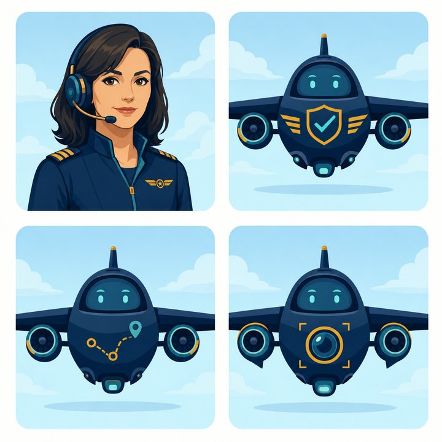
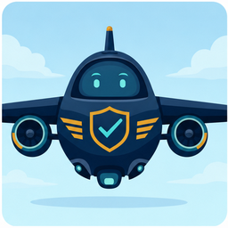
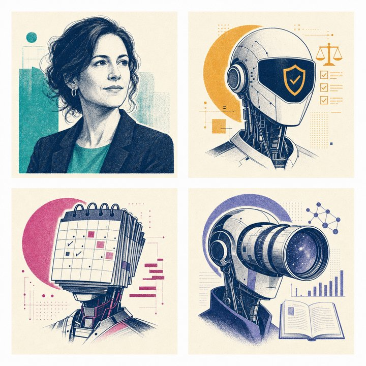
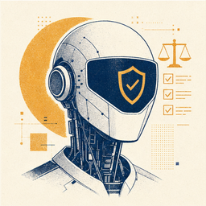
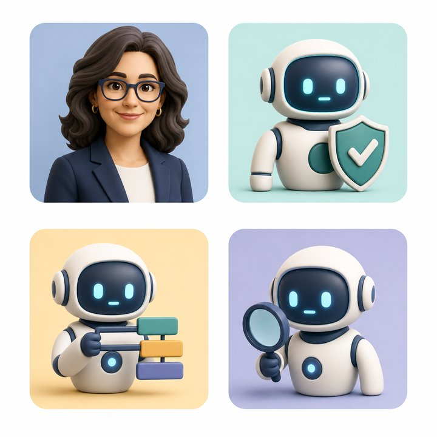
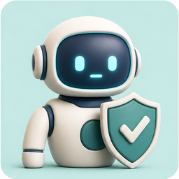
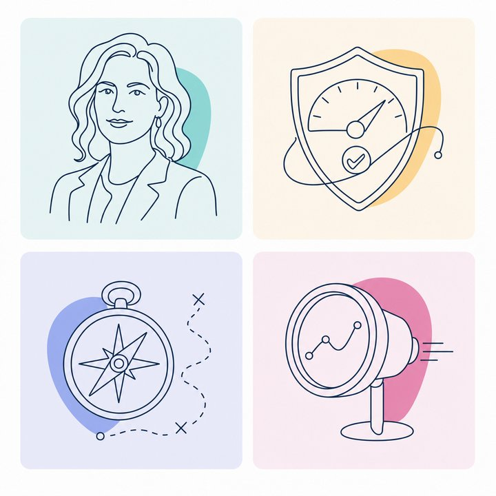

Hangar · avatars · design round 1
Five directions for people and agents
Round 2's flat clip-art set is off the table and PR #25 is paused. Here are five very different directions, each drawn on the same four subjects: a design lead, a risk agent, a planning agent and a research agent. Beside each sheet are the same four at the sizes they really appear in the app. Judge them there, not at poster size.
Pick a direction, or mix them (for example, emblem agents with line-portrait people). The next round takes that direction across the full cast of twelve roles and the people.
A · Geometric emblem
Recommended
Bauhaus shapes in flat token colors. People are abstract silhouettes; each agent is an emblem built from its role (a shield, stepped blocks, a lens).

As a cast in the Hangar (40px):
Risk Review
Risk and complianceMara, Risk Review, Planner and Researcher replied
What works
- Sharpest at 24px of all five: big shapes, no fine detail.
- Agents read by role, not as a row of near-identical robots.
- Uses the token palette natively, so it sits inside the app instead of on top of it.
- Easy to extend: a new role is a new emblem from the same shapes.
Tradeoffs
- People are abstract, so two colleagues may need different hair, color and accessory to tell apart.
- Least warm; reads as a system, not a cast of characters.
B · Flight crew
Leans into the Flight Deck name: people wear an aviator headset, agents are small aircraft with role insignia on the fuselage.

As a cast in the Hangar (40px):

Risk Review
Risk and complianceMara, Risk Review, Planner and Researcher replied
What works
- Most on-brand and memorable; a demo audience gets the joke at once.
- Warm, detailed human portrait.
Tradeoffs
- All agents share one aircraft body, so the role is only a small marking that disappears at 24px.
- The pilot costume makes every real colleague look like a pilot.
- Sky backgrounds are off-palette and busy beside status colors.
C · Risograph editorial
Two-color print look with grain, like magazine spot illustrations. Agents are mechanical heads built from their role (a visor with a shield, a calendar head, a telescope lens).

As a cast in the Hangar (40px):

Risk Review
Risk and complianceMara, Risk Review, Planner and Researcher replied
What works
- The most sophisticated and adult; nothing like other AI tools.
- The role concepts are the strongest of the five.
Tradeoffs
- Fine linework and grain turn to mud at 24 and 40px.
- Photographic portraits invite "who is that?" for invented colleagues.
- Hard to keep consistent when contributors generate new ones.
D · Soft 3D
Matte clay-like 3D busts on pastel tiles; agents are the same friendly robot holding a role object.

As a cast in the Hangar (40px):

Risk Review
Risk and complianceMara, Risk Review, Planner and Researcher replied
What works
- Polished and friendly; reads well at 40px.
- Easy to generate consistently.
Tradeoffs
- Looks like every AI startup mascot right now.
- Agents are one robot with different props, the same problem as the round you rejected.
- 3D lighting clashes with the flat app.
E · Line portrait
Single-weight navy line drawings over one offset color shape. Agents are instruments with personality (a shield gauge, a compass, a scope).

As a cast in the Hangar (40px):
Risk Review
Risk and complianceMara, Risk Review, Planner and Researcher replied
What works
- Calm and elegant; very consistent with the paper look of the Hangar.
- Agent concepts avoid robots entirely.
Tradeoffs
- Thin lines vanish at 24px and look faint in dark mode.
- Instruments read as icons, not as members of a team.